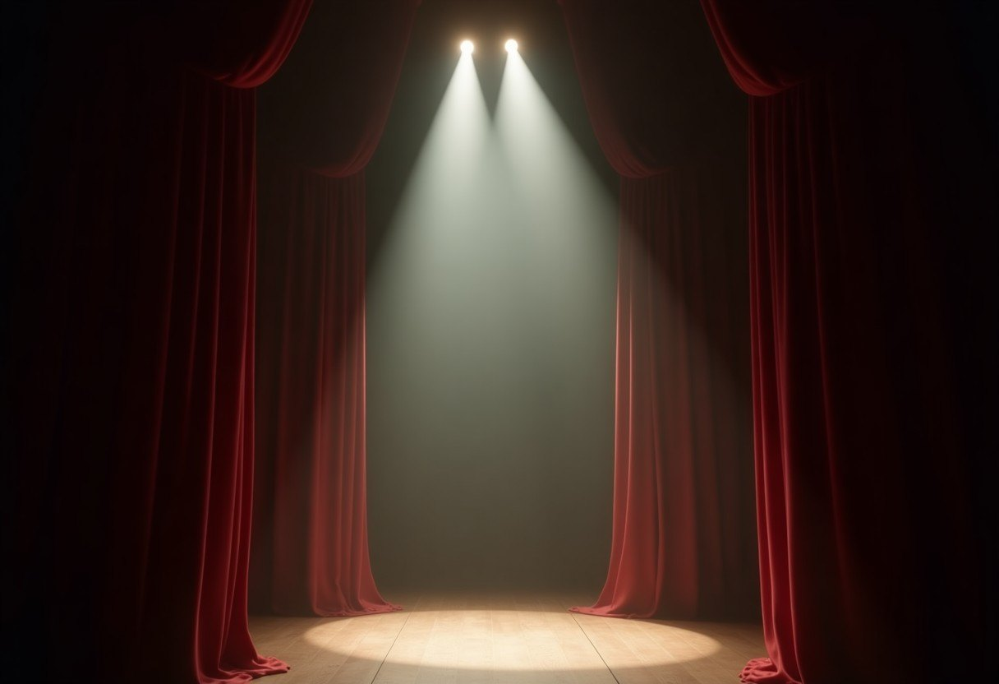
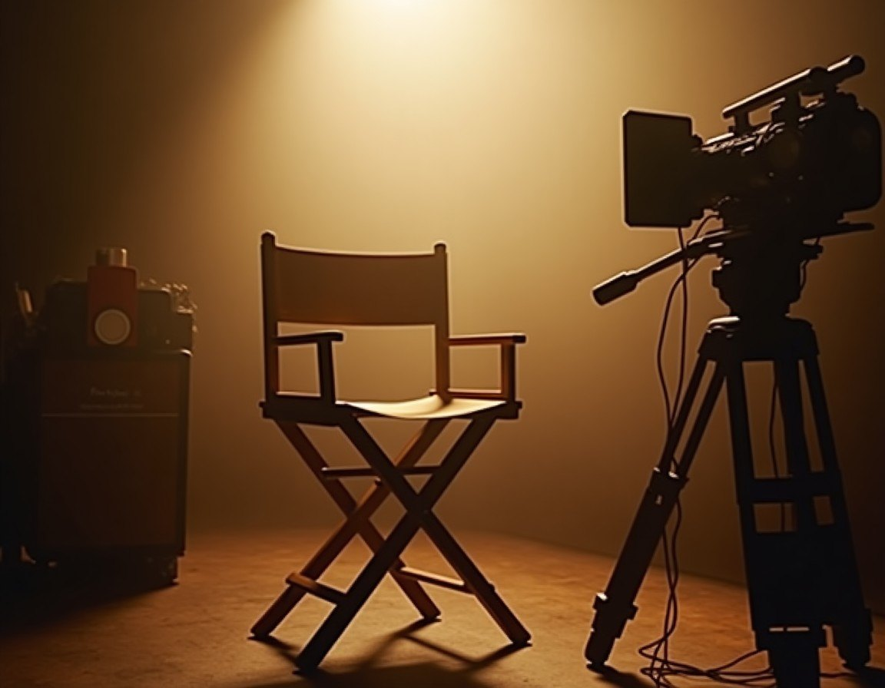

From silent nitrate reels to modern auteur rebellion, this immersive journey traces Hollywood's evolution through three cinematic acts.
The 1910s marked the birth of Hollywood as independent camera crews fled the Edison Trust to the sunlit hills of Southern California. This was the era of hand-cranked cameras, silent film, and the establishment of the Nestor Film Company.
With the rise of the motion picture, a new industry was born. Independent filmmakers, fleeing the restrictive practices of the Edison Trust, sought the golden light of California's citrus groves. The Nestor Film Company emerged as a pioneer, capturing the spirit of this new medium.
The 1930s-1950s saw the rise of the five major studios and the golden age of Hollywood. This was an era of glamour, the production code, and the creation of contract movie stars.
The sound era brought with it the five major studios: MGM, Paramount, Warner Bros., Fox, and RKO. The production code regulated content, while the art deco backlots became iconic symbols of Hollywood's golden age. Contract stars emerged as the industry's new stars.

The threat of suburban television birthed the development of Technicolor and CinemaScope. The mid-century era saw the construction of massive soundstages and the rise of epic filmmaking.
The construction of soundstages like Warner Bros.' Burbank lot became symbols of Hollywood's technological prowess. The era of the big studio spectacle was in full swing.
The late 1960s to late 1970s marked a cultural shift in filmmaking. This was the era of location shooting, naturalism, and director-driven storytelling that redefined modern cinema.
Directors like Scorsese and Coppola broke from studio conventions, embracing location shooting and gritty naturalism. The handheld camera movement became a hallmark of this new wave of filmmaking.

Explore Hollywood's history through our decade-indexed timeline database. Discover key moments and milestones from each era.
Browse TimelineJoin our curated classic film screenings. Experience the magic of Hollywood's golden age in our restored nitrate prints.
View Schedule